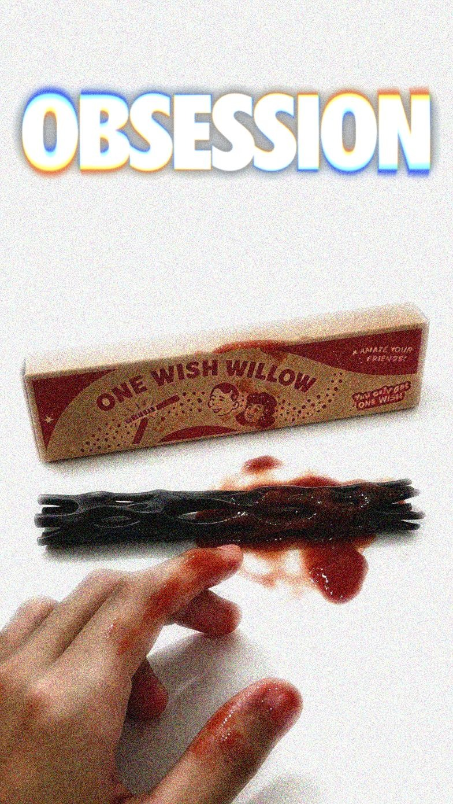

NOSSA HISTÓRIA
A RedDish Sky foi criada na Etec Aristoteles ferreira e nasceu da paixão pelo cinema e da vontade de compartilhar opiniões e avaliações. Desde então, buscamos aproximar o público do nosso universo cinematográfico.
Foi fundada em 2026, com o objetivo de criar um espaço dedicado aos apaixonados cinema, oferecendo filmes, avaliações e conteúdos cinema.
Fale conosco
Entre em contato com a RedDish Sky por e-mail, WhatsApp, LinkedIn, para tirar dúvidas, enviar sugestões ou saber mais sobre nosso trabalho. Estamos sempre abertos para ouvir você!
REDES SOCIAIS
Siga nossas redes sociais e fique por dentro das novidades do cinema, avaliações de filmes e muito mais. Venha fazer parte desse universo!
